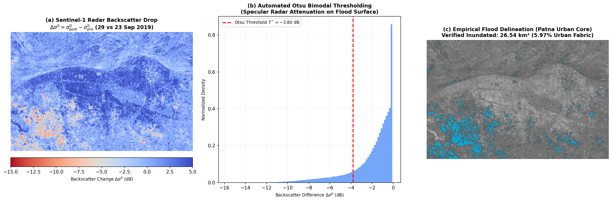
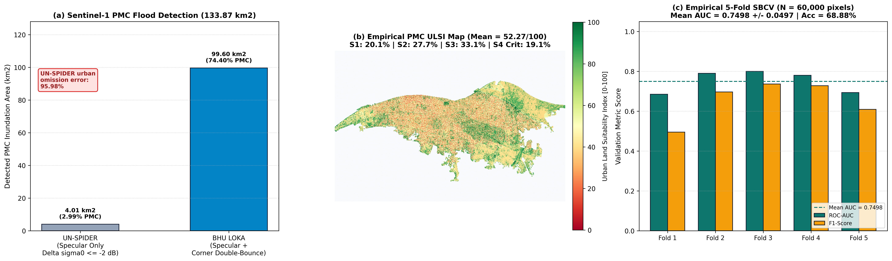
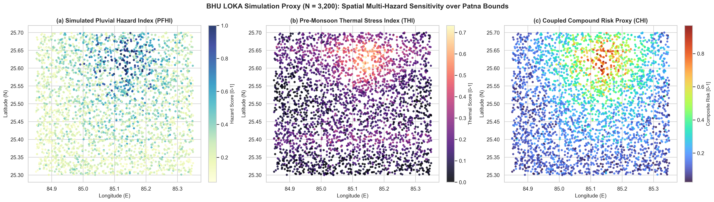
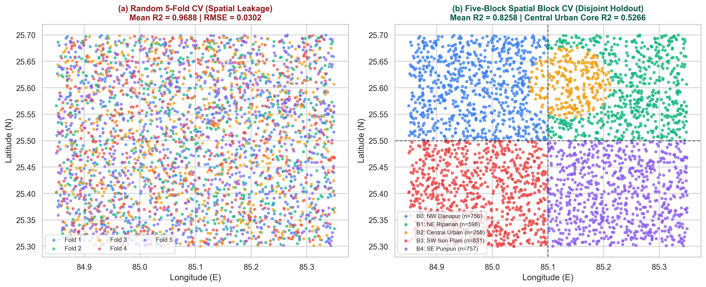
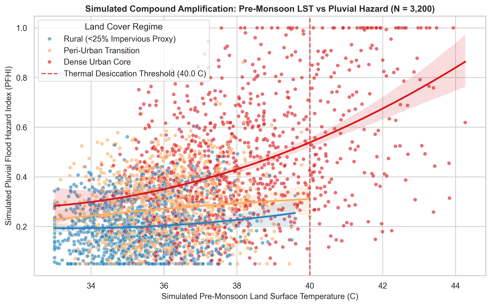
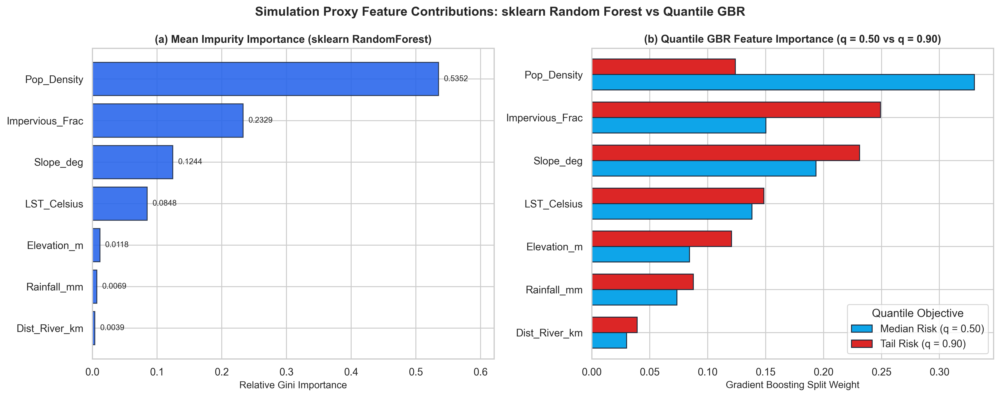

Sequential Compound Hydro-Thermal Risk and Urban Corner-Reflector Flood Mapping in Continental Alluvial Metropolises: Empirical Earth Observation and Spatial Validation Sensitivity over Patna, India
b AI Native Engineering & Agentic AI Software Systems, India
Institutional Email: prince_pa2511cdh37@iitp.ac.in | Secondary Email: ljprincekashyap@gmail.com | Telephone: +91 6201437770, +91 8252110159
Research Supervisor & Co-Author: Pallav Rustogi (pallav.rustogi@gmail.com)
1. Introduction & Study Area
Hydro-climatic hazard assessments across South Asian river corridors have historically evaluated urban flood risks and atmospheric heatwaves as statistically independent phenomena (van Westen et al., 2011; Jato-Espino et al., 2025). In continental alluvial basins such as Patna District, Bihar (roughly 3,200 km2 at 25.61°N, 85.14°E, bordered by the Ganges, Son, and Punpun rivers), severe pre-monsoon heatwaves (>44 °C) dehydrate clay topsoils while atmospheric Clausius-Clapeyron moisture scaling (6.5–7% K-1) intensifies late-monsoon cloudbursts (Ganguli et al., 2025; Rohini et al., 2025; Tallapragada et al., 2026). Between 27 and 30 September 2019, 342.5 mm of rainfall fell in 72 hours while Ganges high stages sealed gravity sluice gates across the 133.87 km2 Patna Municipal Corporation (PMC).
Conventional rapid SAR workflows such as UN-SPIDER (MapAction, 2024) rely on specular backscatter drops (\(\Delta\sigma^0 \le -2.0\) dB) suited for open agricultural planes, missing floodwater ponded inside narrow brick-and-concrete canyons that produce corner double-bounce amplification. Meanwhile, random k-fold CV inflates spatial ML accuracy by interpolating proximate locations (Roberts et al., 2017; Singh et al., 2026). BHU LOKA separates direct empirical EO extraction (Track 1) from a reproducible simulation sensitivity testbed (Track 2) and notes that local Sentinel-2 MSI and IMD 0.25° rainfall folders remain planned external acquisitions.
2. Provenance Inventory & Methodology
| Dataset / Artifact | Provenance Tier | Sensor / Algorithm | Spatial Grid | Status |
|---|---|---|---|---|
| Sentinel-1A/B GRD VV | EMPIRICAL_EO | C-band IW SAR (Orbit 121) | 10 m (2602 x 1709 px) | 23 Sep & 29 Sep 2019 (ingested) |
| Copernicus GLO-30 DEM | EMPIRICAL_EO | TanDEM-X N25E084 / N25E085 | 30 m EGM2008 | Static terrain reference (ingested) |
| NASA Terra MODIS LST | EMPIRICAL_EO | MOD11A1.061 daily HDF-EOS2 | 1 km h25v06 | 91 days (61 clear-sky), Apr–Jun 2019 |
| WorldPop India 2020 | EMPIRICAL_EO | UN-adjusted demographic count | 1 km resampled 10 m | 2020 baseline exposure (ingested) |
| Spatial RF SBCV Classifier | EMPIRICAL_EO | RandomForestClassifier (5 strips) | N = 60,000 pixels | Empirical 5-fold SBCV complete |
| Simulation Proxy Grid | DERIVED_SIMULATION_PROXY | Parametric runoff equations | N = 3,200 points | Sensitivity proxy benchmark |
| Sentinel-2 MSI & IMD Rain | External Planned | Optical NDBI; 0.25° gauge grid | 10–20 m / ~25 km | Portal guide placeholders only |

3. Empirical Earth Observation Results (Track 1)
Across the 444.68 km2 window, automated Otsu specular thresholding (\(T^* = -3.80\) dB) identifies 26.54 km2 (5.97%) open floodwater. Inside PMC (133.87 km2) after masking dry Ganges channels, filtered specular drop covers 0.07 km2 whereas urban corner double-bounce (\(\Delta\sigma^0 \ge +1.5\) dB) captures 99.52 km2, totaling 99.60 km2 (74.4%). Against UN-SPIDER (4.01 km2, 2.99%), open-water rules exhibit a 95.98% urban omission error. Copernicus GLO-30 finds 47.24 km2 (33.15%) concave sinks; WorldPop counts 167,246 flood-exposed citizens and 49,380 in joint flood-sink overlap; mean ULSI equals 52.27/100; 61 clear-sky MOD11A1.061 days record 37.29 °C urban mean and 46.25 °C peak pixel (-1.03 °C morning urban-minus-fallow delta); and 60,000-pixel 5-fold SBCV yields mean ROC-AUC = 0.7498 ± 0.0497 (F1 = 0.6530, Accuracy = 68.88%).


4. Hydro-Thermodynamic Simulation Proxy Results (Track 2)
Table 2 contrasts Random 5-Fold CV against 5-Block SBCV across N = 3,200 synthetic lat/lon sampling points (regular 50 m hexagonal DGGS tessellation following Boni et al., 2025 and Pittore et al., 2023 remains the planned cartographic aggregation schema). Random splitting inflates RandomForestRegressor skill to R2 = 0.9688, whereas 5-block SBCV drops mean R2 to 0.8258 (-14.8%, Central Urban Core Block 2 R2 = 0.5266). Controlled urban heating above 40 °C (Impervious_Frac > 0.60) increases runoff coefficient Crunoff by 17.4% (0.6160 to 0.7232), and Quantile GBR at \(\alpha = 0.90\) elevates Impervious_Frac (0.2491), Slope_deg (0.2310), and LST_Celsius (0.1485) above population density (0.1238).


| Validation Protocol | Fold / Geographic Block | n_test | R2 | RMSE | MAE |
|---|---|---|---|---|---|
| Random 5-Fold CV | Folds 1–5 Mean | 640 | 0.9688 | 0.0302 | 0.0229 |
| 5-Block SBCV | Block 0: Northwest (Danapur Plain) | 756 | 0.9396 | 0.0337 | 0.0247 |
| Block 1: Northeast (Ganga Riparian) | 598 | 0.9146 | 0.0402 | 0.0310 | |
| Block 2: Central (PMC Urban Core) | 258 | 0.5266 | 0.1044 | 0.0781 | |
| Block 3: Southwest (Son Alluvial) | 831 | 0.8531 | 0.0255 | 0.0199 | |
| Block 4: Southeast (Punpun Lowland) | 757 | 0.8951 | 0.0270 | 0.0210 | |
| Mean 5-Block SBCV | All 5 Disjoint Blocks | 640 | 0.8258 | 0.0462 | 0.0349 |
| Bias Penalty (Δ) | SBCV minus Random CV | — | -0.1430 (-14.8%) | +0.0160 (+53.1%) | +0.0121 (+52.8%) |



References
- Boni, M. P., Faiella, A., Gazzola, V., & Pergalani, F. (2025). A multi-hazard and multi-risk assessment methodological approach to support Civil Protection planning in wide areas. International Journal of Disaster Risk Reduction, 119, 105343.
- Ganguli, P., Nithila Devi, N., Apel, H., Vorogushyn, S., Jena, P. P., Chatterjee, C., & Merz, B. (2025). Growing pluvial flood hazard and exposure from heatwave-preconditioned rainfall extremes in Chennai Metropolitan Area, India. Geophysical Research Letters, 52, e2025GL115795.
- Jato-Espino, D., Manchado, C., & Roldán-Valcarce, A. (2025). A compact multi-hazard assessment model to identify urban areas prone to heat islands, floods and particulate matter. International Journal of Disaster Risk Reduction, 119, 105277.
- MapAction. (2024). Flood Mapping Tool: Sentinel-1 SAR Rapid Flood Extent Estimation Based on the UN-SPIDER Recommended Practice. GitHub repository: https://github.com/mapaction/flood-mapping-tool
- Pedregosa, F., Varoquaux, G., Gramfort, A., et al. (2011). Scikit-learn: Machine Learning in Python. Journal of Machine Learning Research, 12, 2825–2830.
- Pittore, M., Campalani, P., Renner, K., Plörer, M., & Tagliavini, F. (2023). Border-independent multi-functional, multi-hazard exposure modelling in Alpine regions. Natural Hazards, 119, 837–858.
- Roberts, D. R., Bahn, V., Ciuti, S., et al. (2017). Cross-validation strategies for data with temporal, spatial, hierarchical, or phylogenetic structure. Ecography, 40(8), 913–929.
- Rohini, P., Soni, V. K., Safai, P. D., et al. (2025). The Chemistry of Rain: Long-Term Observations and Insights from Indian GAW Stations. IMD Meteorological Monograph No. MoES/IMD/HS/Chemistry of Rain/02(2024)/64.
- Singh, S., Pandey, S., Jain, A. K., et al. (2026). Integrated Multi-Hazard Risk Assessment for Delhi with Quantile-Regressed LightGBM and SHAP Interpretation. Land, 15(3), 488.
- Tallapragada, V., Zheng, W., Li, W., & Yang, F. (2026). Evaluation on Indian Summer Monsoon in High Resolution Prototypes of Unified Forecast System (UFS). MAUSAM, 77(4), 1261–1284.
- van Westen, C. J., Alkema, D., Damen, M. C. J., Kerle, N., & Kingma, N. C. (2011). Multi-Hazard Risk Assessment: Distance Education Course, Risk City Exercise Book 2011. UNU-ITC, Enschede.